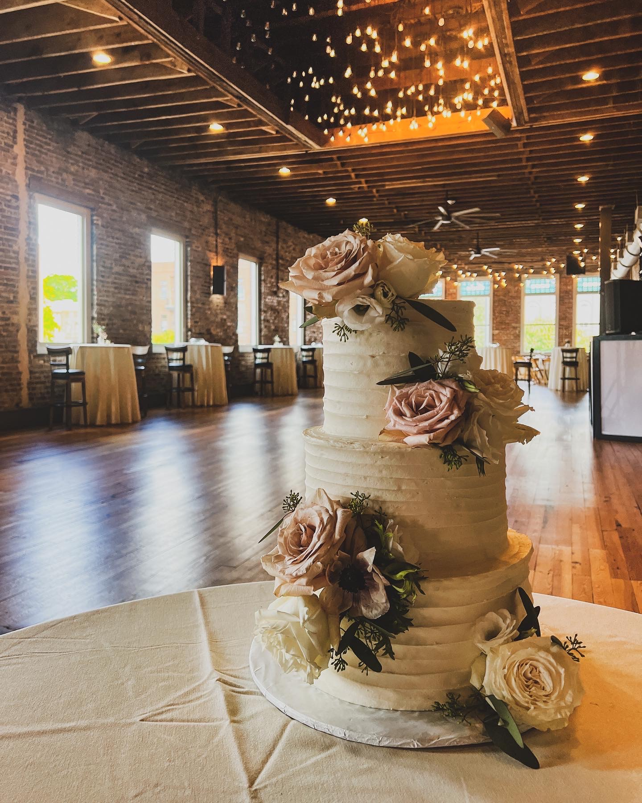
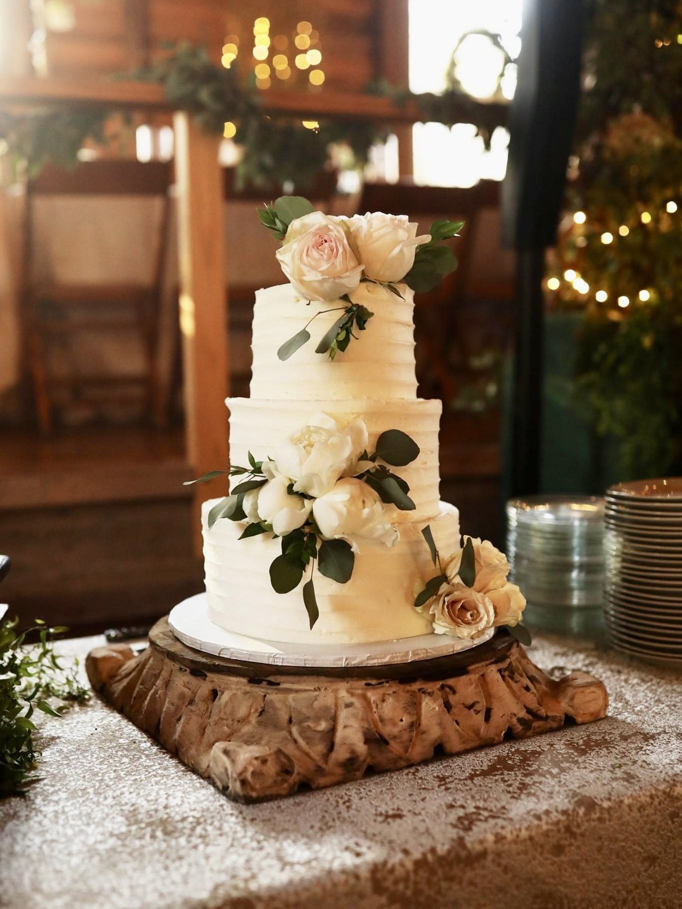

Professional Experience
Design and Writing
Eli is experienced in writing social copy and long-form pieces for STEM-focused companies and organizations . He, also, is extremely comfortable using the Adobe Creative Suite and other design tools. Since starting at the Georgia Institute of Technology, he has worked at the School of Civil and Environmental Engineering where he does marketing and communications work along with web design. When he began at Teradata, Eli pivoted to writing about tech and data analytics. In addition to STEM topics, Eli has experience in writing about public policy as he spent time at the Scholars Strategy Network as a communications intern. Below is some of Eli's work:
Possible: Global Event Series for Teradata
Ivey Recognized among "Chemical & Engineering News" Talented Twelve for GT CEE
New Member Spotlight: Jamie Abrams Shares Personal Story to Spotlight Healthcare in a Post-Roe World for SSN
Baking
Throughout his time running the bakery, Eli worked with over thirty bride-groom pairs to create beautifully stunning wedding cakes. Here are just a few of his favorites:
|  |  |  |
Photography
For years, Eli only captured pictures of food and his cake creations, yet a recent trip to Yellowstone National Park ignited his love for natural photography. Here is a sample of his photography work: